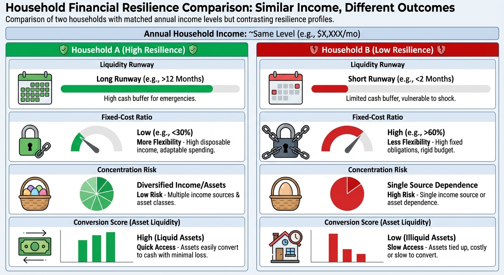

The New Middle-Class Trap: High Income, Low Net Worth, and Why Cash Flow Is Not Wealth
Many households earn well yet remain fragile because income is consumed, not converted into durable optionality.
A lot of households now live inside a strange contradiction. Income is strong. Careers look stable. Monthly cash flow comes in reliably. Yet net worth is thinner than expected, anxiety is high, and major life decisions feel fragile. This is the new middle-class trap: high income, low durable wealth, and a mistaken belief that strong monthly earnings equal financial security.

The trap is not about irresponsibility. It is about structure. In a higher-cost, higher-rate environment, more households are discovering that cash flow can mask weak balance sheets for years. You can look prosperous in real time and still be underprepared for volatility, career shocks, family obligations, or retirement transitions. The danger is subtle because paychecks keep arriving. The signal appears only when stress tests begin.
This post breaks down how the trap forms, why it has become more common, how to detect it early, and what households can do to convert high cash flow into durable net worth. The thesis is simple: income is fuel, not destination. Without conversion mechanics, fuel burns and leaves little behind.
Cash Flow and Wealth Are Related, But Not the Same
Cash flow is a flow variable. It measures money moving through your household each month. Wealth is a stock variable. It measures what remains after liabilities and how resilient those assets are under stress. You can have high flow and weak stock. You can also have moderate flow and strong stock if conversion and risk discipline are better.
The mistake many households make is using lifestyle smoothness as a proxy for wealth health. If bills are paid, spending is comfortable, and vacations happen, the assumption is that finances are strong. Sometimes that is true. Often it is only true while income remains uninterrupted and asset prices remain cooperative. Wealth health is what survives when those conditions weaken.
In practical terms, the question is not “How much do we make?” It is “How much do we keep, where is it stored, how concentrated is it, and can it absorb shocks without forced bad decisions?” Those questions turn finance from status language into system design.
Why the Trap Expanded in the 2020s
Three forces widened this gap. First, housing and essential-service costs climbed faster than many households expected. Second, borrowing costs reset upward, making refinancing and mobility less forgiving. Third, social comparison pressure intensified through online visibility, nudging households toward visible consumption commitments that reduce savings conversion.
At the same time, many careers in knowledge sectors delivered strong nominal income growth. Households interpreted this as structural security. In many cases, it was cyclical strength combined with poor conversion discipline. When fixed costs rose in parallel, high gross earnings did not translate into equally strong net-worth accumulation.
The result is a new profile: high-earning households that look financially successful but have limited liquidity runway, concentrated risk exposure, and low tolerance for income disruption. This profile is not rare anymore. It is increasingly normal across high-cost metros and upper-middle income brackets.
The Four Layers of the New Trap
Layer 1: Lifestyle lock-in. Fixed commitments expand with income: housing, schooling, car payments, memberships, travel cadence, and service outsourcing. Fixed burn rises faster than savings capacity.
Layer 2: Illusion of optionality. Households assume they can “always cut back later,” but fixed obligations and social commitments make cuts harder than expected.
Layer 3: Concentrated wealth. Net worth may exist, but often in low-liquidity or high-volatility forms: home equity, employer stock, private business equity. Usable resilience is weaker than headline net worth implies.
Layer 4: Under-modeled downside. Plans are built around base-case continuity. Job risk, health events, dependent-care demands, and market drawdowns are treated as remote exceptions rather than plausible scenarios.
When these layers compound, a household can run a high-income machine with low error tolerance. That is the trap.
Case Study: The $280K Household with 90 Days of Flexibility
Consider a dual-income household with combined gross income of $280,000. On paper this looks strong. Their monthly structure: high mortgage, two financed cars, childcare, travel, and recurring lifestyle services. Retirement contributions are decent but liquid reserves are thin. Most net worth sits in home equity and employer equity.
If one income drops for six months, the household can cover maybe 90 days before forced portfolio sales or expensive debt use. Their wealth is not fake. It is just not robust. They are one prolonged disruption away from high-stress decisions despite strong annual income.
This pattern is common because income confidence substitutes for resilience planning. As long as salaries rise and markets trend up, the model appears stable. When volatility appears, structural weaknesses surface quickly.
The “Rich Salary, Poor Balance Sheet” Diagnostic
A fast diagnostic can identify this trap early. Ask six questions:
1. How many months of essential spending are covered by truly liquid assets?
2. What share of net worth is tied to one asset or one employer?
3. How much of monthly spending is fixed versus adjustable within 30 days?
4. Would a 25% income drop force asset sales within six months?
5. Are major life goals funded by recurring savings or by hoped-for asset appreciation?
6. Can the household absorb a large surprise cost without new high-interest debt?
If most answers are weak, the household is likely high income but low resilience. The correction is usually structural, not dramatic: better conversion, better buffers, better diversification, and lower fixed-cost rigidity.
Why Net Worth Can Lag for Years Even with High Income
Households often underestimate friction. Taxes, housing carry, debt interest, insurance, and service inflation can absorb large portions of incremental pay raises. If raises are translated into lifestyle upgrades immediately, net-worth acceleration never arrives. The household stays on a treadmill where effort rises but stock accumulation does not.
Another drag is delayed investing. High earners sometimes hold large idle cash balances out of fear, then deploy late in bullish periods due to FOMO. Others over-concentrate in one familiar asset. Both behaviors reduce risk-adjusted compounding. Income alone cannot offset repeated process errors.
The deeper issue is governance. Most households have spending habits but not capital allocation policy. Without policy, decisions default to emotion and social pressure. With policy, conversion from income to wealth becomes predictable.
Housing and Education Costs: The Two Giant Multipliers
In many high-cost regions, housing and education-related costs dominate upper-middle household budgets. Even when both are “reasonable” individually, combined burden can suppress savings velocity dramatically. Families then rely on career continuity and asset appreciation to maintain confidence. That can work in benign periods and fail quickly in disruptions.
Housing also creates a liquidity mismatch. Home equity can look large while monthly flexibility remains low. In stressed conditions, accessing equity is neither instant nor frictionless. Treating home equity as emergency liquidity can create false confidence.
Education spending introduces path dependence. Once families commit to a schooling path, reducing that line item can be emotionally and socially difficult. This is why households should model education commitments as long-term fixed obligations, not discretionary spend.
The Behavioral Trap: Success Signaling vs Wealth Building
Social environments influence spending norms. High earners often benchmark against peers with similar visible lifestyles, not against long-term resilience metrics. This creates pressure to convert raises into visible status consumption rather than invisible balance-sheet strength.
The issue is not moral. It is strategic. Status spend is often sticky; wealth assets are often optional in early years. If the habit sequence starts wrong, households can spend a decade scaling lifestyle complexity before building capital buffers. Reversing later is possible but psychologically expensive.
A useful reframe is to treat early visible restraint as optionality acquisition. Every avoided fixed-cost commitment buys future freedom. This language resonates better than generic austerity messaging because it ties behavior to agency, not deprivation.
Concentration Risk: The Quiet Fragility Driver
Many high-income households unintentionally concentrate risk in three places at once: career income, employer equity, and local real estate. In strong markets this can feel efficient. In downturns, these exposures can correlate. A sector shock can cut compensation while equity and home demand weaken simultaneously.
Diversification is often framed as return tradeoff. In household finance, diversification is mainly a survival strategy. It lowers the chance that one macro event damages every major pillar at once. For families with high fixed costs, this can be the difference between temporary stress and structural setback.
A practical concentration limit is to cap single-exposure risk relative to liquid net worth, not just total net worth. Total net worth can hide illiquidity. Liquid net worth reveals practical sensitivity.
How to Convert High Income Into Durable Wealth
Conversion requires system design. The following framework works because it is operational.
1) Set a conversion target. Define the percentage of gross income that must become annual net-worth growth through savings and debt reduction. Track it like a KPI.
2) Build a liquidity floor first. Fund 6 to 12 months of essential spending in high-quality liquid assets before increasing risk sleeves.
3) Separate fixed and flexible budgets. Identify what can be cut in 30 days and what cannot. Keep fixed burden below a pre-set threshold.
4) Write concentration rules. Cap exposure to employer stock, single property dependence, and correlated sector risk.
5) Automate core investing. Remove timing emotion for baseline compounding.
6) Use raise-allocation rules. For each raise, pre-assign shares to taxes, lifestyle upgrades, reserves, and long-term investing.
7) Re-underwrite annually. Recalculate resilience under current rates, costs, and family obligations.
This is not complexity for its own sake. It is what turns income power into balance-sheet durability.
The Raise Allocation Rule That Changes Everything
One high-impact tactic is a simple raise split rule. For example: 50% of post-tax raise to long-term assets, 30% to lifestyle upgrades, 20% to reserve strengthening or debt optimization until target buffers are hit. Exact ratios vary, but pre-commitment prevents raises from being fully absorbed by recurring spending.
Households that adopt raise rules often see a surprising shift. Lifestyle still improves, but not at the expense of compounding. Over five to ten years, this creates a visible break from peer groups that let every income increase translate into fixed-cost expansion.
The key is consistency, not perfection. One imperfect year does not break the model. Absent rules over many years usually does.
A 24-Month Reset Plan for Trapped Households
Months 1-3: build full balance-sheet map, classify liquidity, identify fixed-cost pressure points, and set resilience targets.
Months 4-6: stabilize cash flow by reducing low-value recurring costs, refinancing expensive debt if feasible, and pausing nonessential fixed-cost expansions.
Months 7-12: complete liquidity floor funding and implement concentration reduction schedule where needed.
Months 13-18: rebalance portfolio to match written risk policy; optimize tax location and realization planning.
Months 19-24: institutionalize governance with quarterly scorecards and annual stress-test reviews.
This timeline is realistic for households that cannot make abrupt changes. Gradual execution still works if direction is clear and measured.
How Wealth Ranking Tools Should Respond
If your product shows percentile rank, it should not treat all net worth as equal quality. A household with high income and moderate net worth but weak liquidity and high concentration should receive different guidance than a household with similar net worth and stronger resilience metrics.
Useful features include:
Resilience-adjusted rank: rank after liquidity and concentration adjustments.
Conversion score: how efficiently income converts into net-worth growth.
Fragility alerts: warnings when fixed-cost burden or concentration exceeds thresholds.
Scenario rank: percentile under modeled income or market shocks.
These features keep ranking useful instead of performative. Users do not just see where they stand. They see whether their structure can sustain that position.
What Is Overstated in High-Income Finance Conversations
Overstatement 1: “If income is high, everything else is details.” False. Without conversion and risk control, high income can coexist with low resilience.
Overstatement 2: “Home equity means we are safe.” Partly true, often incomplete. Equity is valuable but not always fast-access shock protection.
Overstatement 3: “We can always cut spending later.” Harder than it sounds when commitments are social, educational, or contractual.
Overstatement 4: “We will catch up with one big liquidity event.” Possible, but planning on uncertain windfalls is not a robust household strategy.
Speculation, Clearly Labeled
Speculation, clearly labeled: Over the next five years, household wealth dispersion within similar income bands will likely widen further. The dividing line will be less about salary and more about structural conversion quality: liquidity discipline, fixed-cost flexibility, and concentration management. High earners with weak systems may feel increasingly stressed despite growing gross income. Moderate earners with strong systems may build steadier long-run optionality.
The Practical Bottom Line
The new middle-class trap is not a failure of effort. It is a failure of translation. Income is being translated into lifestyle complexity faster than into durable assets. Fix the translation, and the same income can produce a very different future.
Cash flow keeps the machine running. Wealth gives the machine choices. If your current setup only does the first, it is time to redesign for the second.
A Deeper Numeric Example: Two Families, Same Income, Different Outcomes
Take two households each earning $240,000 combined gross income. Family A prioritizes visible lifestyle upgrades quickly. Family B uses a conversion rule and keeps fixed costs lower relative to income growth. Both are hardworking and financially literate. Both believe they are acting reasonably.
After taxes and core costs, Family A saves $1,200 per month on average, with occasional interruptions. Family B saves $3,000 per month consistently and allocates raises using pre-set rules. If both earn moderate investment returns over ten years, the wealth gap becomes substantial. Family B can end with several hundred thousand dollars more in liquid and retirement assets despite identical headline income history.
The lesson is not that Family A is irresponsible. The lesson is that small monthly conversion differences compound into life-level differences. A $1,800 monthly savings gap is $21,600 per year before returns. Over a decade, the gap becomes strategic freedom: better shock absorption, better career choices, and less dependence on perfect market timing.
What “Low Net Worth” Actually Means in High-Income Households
Low net worth in this context does not mean zero assets. It usually means one or more of these conditions are true:
Net worth is heavily concentrated in one illiquid asset.
Debt obligations consume too much monthly optionality.
Liquid reserves are weak relative to essential spending.
Asset growth depends on favorable market regimes rather than robust contribution discipline.
In other words, the issue is quality of wealth, not only quantity. A household can be technically positive in net worth and still be strategically exposed. This is why percentage ranks alone can mislead. A resilience-adjusted view is more useful for planning.
The Debt-Service Trap Inside High Income
Debt is not automatically bad. Low-cost, well-structured debt can support wealth growth. The trap appears when debt-service burden crowds out investment and reserve building. High earners often carry multiple obligations that each look manageable in isolation: mortgage, vehicles, education financing, personal credit lines, and recurring installment plans. Combined, they can compress optionality.
A practical threshold is to monitor debt service as a share of take-home pay and test sensitivity under temporary income reduction. If a moderate income shock forces immediate borrowing or asset liquidation, the debt stack is likely too rigid for the household’s risk profile.
In higher-rate environments, this rigidity becomes more expensive because refinancing is less likely to provide relief. Households that built plans around low-cost rollover assumptions may need structural resets rather than tactical patches.
Emergency Fund Myths That Keep Households Fragile
Myth one: “My brokerage account is my emergency fund.” If market volatility and tax consequences can materially reduce usable value during stress, it is not a full substitute for dedicated liquidity.
Myth two: “My home equity is my backstop.” Equity is valuable but often slow and friction-heavy to access precisely when speed matters.
Myth three: “My industry is stable, so runway can stay small.” Income stability assumptions often fail suddenly and asymmetrically.
A better standard is explicit runway policy tied to essential spending and household risk profile. For many high-income households with high fixed costs, six months is a minimum, not an ambitious target. Twelve months can be more appropriate where income volatility or concentration is elevated.
How Families Drift Into the Trap Without Noticing
Most households do not choose fragility deliberately. They drift into it through small defaults.
Raises get absorbed automatically because no allocation policy exists.
New recurring costs are added faster than old ones are removed.
Employer equity concentration rises passively during strong years.
Tax planning is deferred until year-end and handled reactively.
Insurance and risk-transfer assumptions remain stale as exposure grows.
Each default is manageable. Combined over years, they create a high-income system with little slack. The correction is not one dramatic move. It is reversing the defaults with explicit rules.
What a Household Governance System Looks Like
Strong households operate with simple governance, not constant willpower. Governance means predefined rules for allocation, risk, and review cadence.
Allocation policy: how each dollar of incremental income is split among lifestyle, reserves, and long-term assets.
Risk policy: concentration limits and liquidity minimums.
Review policy: quarterly scorecard and annual stress test.
Good governance reduces emotional decision variance. It also lowers conflict in multi-person households because choices are referenced to agreed policy, not negotiated from scratch during stressful moments.
The 5-Score Dashboard That Replaces Guesswork
If you want one operational dashboard, use these five scores:
1) Conversion Score: annual net-worth growth divided by gross income.
2) Liquidity Score: months of essential spending covered by liquid assets.
3) Flexibility Score: percentage of monthly budget that can be reduced within 30 days.
4) Concentration Score: largest single exposure as percent of liquid net worth.
5) Shock Score: expected months to distress under a modeled 25% income drop.
Track these quarterly. If income rises while these scores stagnate, you are likely deepening the trap. If scores improve, your wealth system is getting stronger even if market returns are uneven.
Children, Caregiving, and the Nonlinear Cost Curve
The trap intensifies when family obligations become nonlinear. Childcare, eldercare, health events, and education transitions can increase cost burden in steps, not gradual slopes. Households that optimized only for stable monthly conditions can be surprised by these jumps.
This is why high-income families should model life-stage cost cliffs in advance. Run scenarios for one additional dependent, temporary caregiving leave, and healthcare-deductible shocks. If those scenarios break the plan quickly, resilience work should precede discretionary upgrades.
Planning for nonlinear costs is not pessimism. It is realistic sequencing. Families with this preparation often navigate transitions with less financial and emotional friction.
Career Capital vs Lifestyle Capital
Another useful distinction is between career capital and lifestyle capital. Career capital includes skills, network depth, optionality in role markets, and earning adaptability. Lifestyle capital includes fixed commitments that sustain current comfort but do not increase future earning flexibility.
High-income households often overinvest in lifestyle capital and underinvest in career capital once earnings feel secure. In unstable labor cycles, this can reverse quickly: commitments stay fixed while income adaptability lags.
A resilient plan allocates part of surplus toward maintaining career capital: upskilling, strategic networking, health maintenance, and optionality-building moves. These investments are less visible than lifestyle upgrades but often have higher long-run return.
When Downsizing Is Strategic, Not Regressive
Some households avoid any perceived step-down because it feels like failure relative to peer norms. In reality, selective downsizing can be a strategic reset that restores savings velocity and lowers fragility. Moving to a smaller home, reducing fleet complexity, or re-tiering recurring services can improve resilience without destroying quality of life.
The key is framing. Downsizing is not necessarily retreat. It can be capital reallocation from low-return fixed consumption to high-optionality assets. Over a decade, that trade can materially improve freedom and reduce dependence on perfect macro conditions.
Speculation, Clearly Labeled
Speculation, clearly labeled: If borrowing costs remain structurally above the ultra-low era and essential-service inflation stays elevated, households with high fixed-cost lifestyles and weak conversion systems may face prolonged wealth stagnation despite strong incomes. Households that standardize conversion governance and liquidity discipline may widen the gap in durable outcomes even without superior income growth.
A Practical 90-Day Start for Readers
If a full 24-month reset feels heavy, start with a 90-day sprint:
Week 1-2: map all recurring obligations and classify fixed vs flexible.
Week 3-4: set conversion target and raise-allocation rule.
Week 5-8: fund first tranche of liquidity floor and reduce one concentration exposure.
Week 9-12: implement quarterly dashboard and schedule first stress-test review.
Most households feel meaningful confidence improvement after these first steps because control returns quickly once structure is visible.
One final point matters. Escaping this trap does not require abandoning ambition or living in permanent restraint. It requires sequencing: secure the floor, then pursue upside. Households that sequence this way tend to make better long-horizon decisions because they are not negotiating from fear in every volatile period. They can take selective risks when opportunities are real and ignore noise when narratives are loud. That is the practical definition of financial confidence: not perfect forecasts, but enough structural strength that the future is a set of choices, not a set of emergencies.
That shift from reactive cash management to proactive wealth governance is where high income finally becomes durable freedom.
Key Takeaways
High income does not guarantee durable wealth when conversion to assets is weak.
The new middle-class trap is driven by fixed-cost lock-in, concentration, and low liquidity buffers.
Resilience metrics are as important as net-worth totals for real financial security.
With policy-based conversion and governance, households can redesign outcomes without dramatic income changes.

Source List
Federal Reserve (2023). Changes in U.S. family finances from 2019 to 2022
Federal Reserve (2023 PDF). Survey of Consumer Finances bulletin
Bureau of Labor Statistics (2025). Consumer Price Index program
Freddie Mac (2026). Primary Mortgage Market Survey
Bureau of Economic Analysis (2024). Regional Price Parities by state and metro area